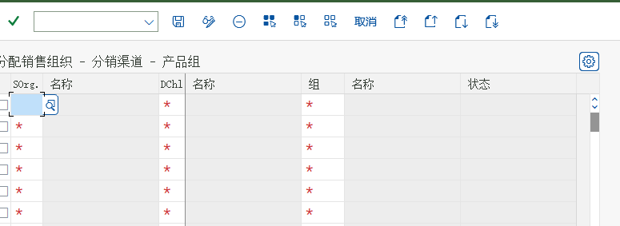

实训：五个动手任务
任务卡 · 完成基准 · 对应画面 · 常见错误
五个任务按顺序做，做完就相当于把 O2C 走了一遍。每个任务都给了「完成基准」（能自己验证），以及对应的教材真实画面。填表用 学员版记入表。
任务 1
看懂组织结构
组织对应课程页：看懂组织结构做什么
- 在系统里找到销售组织、分销渠道、产品组的清单（后台或直接查表）
- 找到本系统里已经建好的销售范围，记录 2~3 个组合
- 找到工厂 → 销售组织/分销渠道 的分配，说明「为什么是多个」
完成基准（能自己验证才算做完）
- 能画出「销售组织 × 分销渠道 × 产品组 = 销售范围」的图
- 能说出本系统的销售范围有哪些
- 能解释工厂与销售组织为什么是多对多
常见错误 / 卡住时看这里把「销售范围」说成「销售部门」——注意区分销售范围（Sales Area）与销售办公室（Sales Office）。
{kind=link}


任务 2
报价 → 销售订单
流程对应课程页：报价做什么
- 用 VA21 建一张报价（客户 + 物料 + 数量 + 有效日期）
- 检查报价的价格条件：价格来自哪条条件记录
- 用「后继功能 → V-01 订单」参照报价创建销售订单（订单类型 OR）
- 在订单里记录：确认交货日期、净价值、项目类别
完成基准（能自己验证才算做完）
- 拿到报价号与订单号
- 订单抬头能追到报价（环境 → 单据流）
- 订单里价格自动带出且与条件记录一致
- 确认交货日期有值（说明可用性检查跑过）
常见错误 / 卡住时看这里价格为空 → 检查条件记录是否存在/是否过期；确认日期为空 → 检查可用性检查是否被关闭。


任务 3
交货与发货过账
流程对应课程页：交货与发货过账做什么
- 用 VL01N 参照订单创建外向交货（注意装运点与交货日期）
- 在 VL02N 里完成拣配（填写拣配数量）
- 点「发货过账」（移动类型 601），记录系统提示
- 用 MMBE 或 MB52 看库存变化；用 VL03N 看交货状态
完成基准（能自己验证才算做完）
- 拿到交货号，交货状态＝已完成发货
- 库存数量减少（记录前后数量）
- 能说明「交货单创建时库存没变，发货过账后才变」
常见错误 / 卡住时看这里提示无库存 → 用 MB1C + 移动类型 501 录入期初库存（教材任务 48 的办法）；找不到装运点 → 检查工厂的起运点分配。


任务 4
开票与过账到财务
流程对应课程页：开票与过账到财务做什么
- 用 VF01 参照交货创建发票（单据类型 F2），记录发票号与净价值
- 用 VF02 下达发票，记录系统提示（「凭证已经传送到记账」）
- 在发票里点「会计」或 VF03 → 环境，查看生成的会计凭证（借贷科目与金额）
- 用 FBL5N 查客户的未清项，确认应收已挂上
完成基准（能自己验证才算做完）
- 拿到发票号，状态＝已过账（已下达）
- 能看到会计凭证：借客户应收 / 贷收入 + 销项税
- 能说出收入科目是被哪三个键确定的
常见错误 / 卡住时看这里开不了票 → 检查交货是否已发货过账；没有会计凭证 → 检查账户确定/税配置是否有缺口。


任务 5
追踪与报表
分析对应课程页：追踪与报表做什么
- 用 VA03 打开任务 2 的订单 → 环境 → 显示单据流，截下整条链
- 用 VA05 按客户或物料查订单清单
- 用 VL06O 查待发货/待过账的交货；用 VF04 查待开票的清单
- （可选）在任务 31/32 更新组已激活的前提下，用 MCTA 跑一次销售分析
完成基准（能自己验证才算做完）
- 能把「订单 → 交货 → 发票」三个号写在一张纸上
- 能解释为什么 MCTA 报表可能没有数据
- 能说出 4 个「追问单据」的入口
常见错误 / 卡住时看这里报表没数据 → 更新组/统计组没配，或数据是配置之前产生的；单据流为空 → 参照关系断了（可能直接新建的单据）。


实训环境准备清单（开课前检查）
| 检查项 | 怎么查 | 达不到时的替代 |
|---|---|---|
| 能登录 SAP GUI 并看到中文界面 | 登录后打开 VA03 | 用教材截图讲解，学员只做观察记录 |
| 有可用的销售组织/销售范围 | 后台企业结构 或 表 TVKO / TVKOV | 用现有销售范围，不要新建 |
| 有客户主数据（销售视图） | VD03 / XD03 | 复制现有客户或建 Z 客户 |
| 有物料（销售视图）+ 条件记录 | MM03 → 销售组织数据；VK13 查 PR00 | 建 Z 物料与 Z 条件记录 |
| 有库存（否则交货走不出去） | MMBE | MB1C 501 录入期初库存 |
| 开票与账户确定配置可用 | 试开一张发票 VF01 | 只讲到发票保存，不下达 |